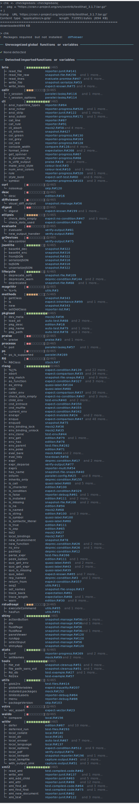

The minimal {checkglobals}-package allows to approximately detect global and imported functions or variables from R-source code or R-packages by statically inspecting the internal syntax trees of the code, (i.e. static code analysis). The aim of this package is to serve as a fast and light-weight alternative to codetools::findGlobals() to check R-packages or R-scripts for missing function imports and/or variable definitions on-the-fly without the need for package installation or code execution. The code inspection procedures are implemented using R’s internal C API for efficiency, and no external R-package dependencies are strictly required (only cli is suggested for interactive use).
Installation
# Install latest release from CRAN:
install.packages("checkglobals")
# Install the development version from GitHub:
# install.packages("devtools")
devtools::install_github("JorisChau/checkglobals")Example usage
R-scripts
The {checkglobals}-package contains a single wrapper function checkglobals() to inspect R-scripts, folders, R-code strings or R-packages. Individual R-scripts can be scanned for global variables and imported functions using the file argument:
The R-script in this example contains a simple R-Shiny application available at https://raw.githubusercontent.com/rstudio/shiny-examples/main/004-mpg/app.R.
Printed output
Printing the S3-object returned by checkglobals() outputs: 1. the name and location of all unrecognized global variables; and 2. the name and location of all detected imported functions grouped by R-package.
The location app.R#36 lists the R-file name (app.R) and line number (36). If cli is installed and cli-hyperlinks are supported, clicking the location links opens the source file at the given line number.
To inspect only the detected global variables or imported functions, index the S3-object by its globals (chk$globals) or imports (chk$imports) components. For instance, we can print detailed source code references of the unrecognized global variables with:

Remote files
The file argument in checkglobals() also accepts remote file locations (e.g. a server or the web), in which case the remote file is first downloaded as a temporary file with download.file().
Folders
Folders containing R-scripts can be scanned with the dir argument in checkglobals(), which inspects all R-scripts present in dir. The following example scans an R-Shiny app folder containing a ui.R and server.R file (source: https://github.com/rstudio/shiny-examples/tree/main/018-datatable-options),
Note: if imports are detected from an R-package not installed in the current R-session, an alert is printed as in the example above. Function calls accessing the missing R-package explicitly, using e.g. :: or :::, can still be fully identified as imports by checkglobals(). Function calls with no reference to the missing R-package will be listed as unrecognized globals.
R-packages
R-packages can be scanned using the pkg argument in checkglobals(). Conceptually, checkglobals() scans all files in the R-folder and contrasts the detected (unrecognized) globals and imports against the imports listed in the NAMESPACE of the R-package. R-scripts present elsewhere in the R-package (i.e. not in the R-folder) are not scanned, as these are not coupled to the package NAMESPACE file. To illustrate, we can run checkglobals() on the checkglobals R-package folder itself:
Bundled R-packages
Instead of local R-package folders, the pkg argument also accepts file paths to bundled (tar.gz) R-packages. This can either be from a location on the local filesystem, or from a remote file location, such as the web (similar to the file argument).
Remote file location:

Remark: if checkglobals() is called without a file, dir, text or pkg argument, the function is run in the current working directory. If the current working directory is an R-package folder, this is identical to checkglobals(pkg = "."), otherwise the behavior is the same as checkglobals(dir = ".").
Programmatic use
Several methods are available to cast the S3-objects returned by checkglobals() to common R-objects. This can be useful for further programmatic use of the function output. The following methods are currently available: as.data.frame(), as.matrix(), as.character() and as_vector().
chk <- checkglobals::checkglobals(pkg = "../checkglobals")
## data.frame with globals/imports
as.data.frame(chk)
#> name package type
#> 1 ansi_align cli import
#> 2 ansi_nchar cli import
#> 3 ansi_strtrim cli import
#> 4 ansi_trimws cli import
#> 5 cli_alert_success cli import
#> 6 cli_alert_warning cli import
#> 7 cli_h1 cli import
#> 8 code_highlight cli import
#> 9 col_blue cli import
#> 10 col_green cli import
#> 11 col_grey cli import
#> 12 col_red cli import
#> 13 col_yellow cli import
#> 14 console_width cli import
#> 15 style_bold cli import
#> 16 style_hyperlink cli import
#> 17 style_italic cli import
#> 18 symbol cli import
#> 19 tree cli import
#> 20 download.file utils import
#> 21 relist utils import
#> 22 untar utils import
## vector of package dependencies
checkglobals::as_vector(chk)[["package"]]
#> [1] "cli" "utils"Useful references
Other useful functions and R-packages with design goals and/or functionality related to {checkglobals} include:
-
codetools::findGlobals(), detects global variables from R-scripts via static code analysis. This and other codetools functions underlie the source code checks run byR CMD check. - globals, R-package by H. Bengtsson providing a re-implementation of the functions in codetools to identify global variables using various strategies for export in parallel computations.
-
renv::dependencies(), detects R-package dependencies by scanning all R-files in a project for imported functions or packages via static code analysis. -
lintr, R-package by J. Hester and others to perform general static code analysis in R projects.
lintr::object_usage_linter()provides a wrapper ofcodetools::checkUsage()to detect global variables similar toR CMD check.